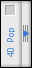

|
This component installs a palette in the Design mode. Tools will be added to this palette gradually as compatible components are installed. |
| 1. | Create a "Components" folder next to the structure file of your database (".4db") |
| 2. | Place the "4DPop.4dbase" folder or an alias of this one in the "Components" folder. |
| 3. | Open your database. |
| 4. | In the "On Startup Database Method", type "Install 4DPop" then a tabulation key. The 4DPop's palette loading code is inserted in the method.
|
| 5. | Reopen the database, the palette is displayed in the lower left corner of the screen in Design mode. |
*On Macintosh the component is a package whose extension "4dbase" is not necessarily visible according to the adjustments of your preferences of display.
The 4DPop help is available in the help menu or while clicking on the "i" icon of the palette
The palette is displayed in the lower left corner of the screen in Design mode. If the palette is closed you can open it by pulling the handle.

If you double-click on the handle of the palette when closed, it will open and adjust its size to the number of tools present. Double-clicking on the handle of the open palette will close it.
If no compatible component is installed, the opened palette will display the following picture:

If one or more components are installed, they will appear as buttons.

You can move the palette by clicking on the title bar, place it on left or on the right of the screen. The pallet's position is memorized.
A contextual menu is accessible on the title bar of the pallet. It takes again the whole of the tools charged and some options with display of the pallet.
The components are charged alphabetically: To force a component to be charged in first (on the left) you can prefix the name of the file with "01" for example.
Place one or more compatible* components or alias in the folder "Components" of your database and restart to access these new tools by the Palette.
The available components are:
 4DPop Bookmarks 4DPop Bookmarks |
Organize the bookmarks you use everyday: URL, files, foders, emails... Manage your list of favorites by drag-and-drop. |
 4DPop Constants Editor 4DPop Constants Editor |
Create and publish your own personalized sets of constants in a dedicated editor. Use them immediately in your 4D methods. |
 4DPop Image buddy 4DPop Image buddy |
Manage all the images in your application's Resources folder. You can easily select, duplicate, and transform your images, preview, drag them into your forms or applications, and use importing tools to convert PICT or CICN resources into PNGs. |
 4DPop Migration 4DPop Migration |
Carefully migrate your applications to 4D v11 SQL by keeping control on all your application shortcuts by transforming your old personalized 4DK# constants 4D v11 SQL constants - and do the same for your macros, as well! |
 4DPop Commands 4DPop Commands |
Quickly get to the 4D command documentation, and drag-and-drop commands (and their parameters!) into the method editor. |
 4DPop Rulers 4DPop Rulers |
Create all the guides you want, placing horizontal and vertical rules on your workspace. Visualize your application within your end-users' screen real estate without having to change your preferences. |
 4DPop Color Chart 4DPop Color Chart |
Precisely choose background and foreground colors for all your projects from a multitude of professional palletes (RGB, HSL, etc.) and generate the corresponding source code simply by dragging and dropping into your methods. |
 4DPop sqlSchemas 4DPop sqlSchemas |
Graphically define SQL Schemas used for external SQL connections (ODBC, SQL Pass trough, 4D for Flex, etc.). Schemas are applied when the database method On sql authenticate is defined. |
 4DPop Window 4DPop Window |
Take control of multiple open windows through a hierarchical menu. All at once, you can keep an eye on your windows in development mode and application mode, and reorganize your windows and manage their dependencies (a method object dependent on a form, for example). Recover windows that have been lost to screen resolution changes, and much more... |
 4DPop XLIFF 4DPop XLIFF |
Use 4D as a true localization editor to manage XLIFF resources in your appication, or even externally. Easily migrate your old STR# and TEXT resources with this handy tool. |
* Go to the 4DPop Help to know how to create compatible components.
This component is provided in compiled version but you can find the source code in the "SOURCES" folder that is located inside the component folder.
Visit the forum devoted to 4D Pop at: http://forums.4d.fr/